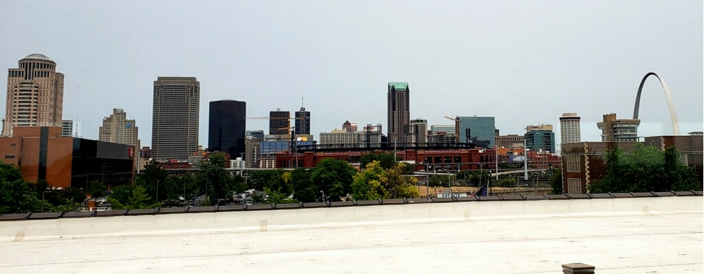

My journey
I am originally from the capital of Ethiopia, Addis Ababa. Living in the capital is
pretty similar to living in other major cities. There is always some construction
and development occurring. The streets are busy with school children and working adults.
Most of the guys spent our spare time watching soccer in different establishments
across the city.
Addis Ababa Capital of Ethiopia
Addis Ababa is sprawling capital in the highlands bordering the Great Rift Valley,
is the country’s commercial and cultural hub. Its National Museum exhibits Ethiopian art,
traditional crafts and prehistoric fossils, including replicas of the famous early hominid,
"Lucy." The burial place of the 20th-century emperor Haile Selassie, copper-domed Holy
Trinity Cathedral, is a neo-baroque architectural landmark.
More

Lalibela Town in Ethiopia
I visited Lalibela rock-cut churche in 2006. Lalibela is a town in the Amhara region of northern Ethiopia. It's known for its distinctive
rock-cut churches dating from the 12th and 13th centuries, which are pilgrimage sites for
Coptic Christians. Carved out of rock, the subterranean monoliths include huge Bete Medhane
Alem, and cross-shaped Bete Giyorgis. Many are joined by tunnels and trenches,
and some have carved bas-reliefs and colored frescoes inside.
More

Fasilides castle,Gonder Town in Ethiopia
I visited Fasilides castle in 2008 .Fasilides castle constructed by King Fasilides made Gondar the seat of his empire in
1636, he constructed a palace that would eventually sprawl into a large complex,
as succeessors added their own buildings to the compound. Set in the heart of what is
now one of Ethiopia’s largest cities, the palace complex is a mixture of beautifully-
preserved period architecture with European and Moorish influences, and rambling ruins.
Interestingly, Fasilides’ Castle itself is the best-preserved, with its lower halls,
reservoirs and steam-baths, remains of kitchens and stables, and even enclosures for
leopards and lions that used to grace the grounds. The castle is located near the city
center. Its structure is purely made of stone. Today, Fasilides baths are used for
baptism during the Timkat festival, the epiphany, in late January; they are only filled
with water for the festival. The castle can be found in Gondar, Amhara region.
Fasilides’ Castle is definitely a representation of Ethiopia’s great and rich history.
More

Obelisk of Axum,Aksum City in Ethiopia
I visited Obelisk of Axum in 2008 .The Obelisk of Axum is a 4th-century AD, 24-metre-tall granite stele/obelisk, weighing
160 tonnes, in the city of Axum in Ethiopia. It is ornamented with two false doors at the
base and features decorations resembling windows on all sides
More

St. Louis City in Missouri
I move from Ethiopia to St. Louis on 2016.
More
